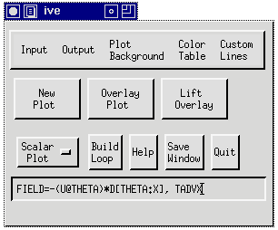

This section lists operations that may be performed at the
IVE command line to compute new diagnostic fields using data in the
original NETCDF file.

The FIELD command is entered at the IVE
command line using the format:
FIELD=expression, [new_field_name]
In response to the command, IVE evaluates the expression,
creates a new field and displays a button for the new field. If the
optional argument "newfield_name" is provided, the button will be
described by "newfield_name." If newfield_name is not provided, the
expression itself will be used for the name of the new field. (This
can be cumbersome if the expression is lengthy.) There is no limit
to the complexity of any expression, except for the recursion depth
(depending on the compiler) and for the length of the command
string. The utility breaks the expression into subexpressions,
using standard mathematical rules. Each subexpression is evaluated
in the following order:
- IVE searches for the subexpression first in memory (e.g., the
result of an earlier computation) and then in the data file.
- If it is not found, IVE attempts to compute the subexpression
using any user-written piece of code in the routine CALC_FIELD (see
Diagnostic Computations Using the
Subroutine CALC_FIELD).
- The last priority is to evaluate the subexpression
mathematically.
Locations flagged as missing data in the input fields are flagged
as missing data in the new diagnostic field.
Supported Operations
The expression evaluation utility supports the brackets (), {}, and
[]. Most mathematical standard operations are allowed. The
following is a list of operations in order of ascending binding
power:
- Addition and subtraction (+, -)
- Multiplication and division (*, /)
The expression A/B*C is interpreted as (A/B)*C, i.e. as in Fortran.
Divisions by zero cause the flagging of the result as missing.
- Power operation (^)
Two versions of this command are implemented:
- If you enter 'field=A^2', i.e. you take the whole field to the
same integer-power, then the fortran integer operation is used.
This operation is also defined for A(i,j,k)<0.
- If you enter 'field=A^B' or field=A^0.5, i.e. you take the
field to a real power, then the fortran real operation is used.
This requires A(i,j,k)>=0. For A(i,j,k) < 0 the resulting
data value is flaged as missing.
- Interpolation operation (@)
This command has maximum binding power and serves to interpolate
one field to the grid of another field. All the aforementioned
operations require fields with the same attributes (exception see
below). In case of a staggered data-set, the fields used in an
operation must first be interpolated on the same grid. This is done
with the operation @. For instance, A@B denotes the A-field on the
grid of B, i.e. A at B.
Supported Functions
In addition, IVE supports the following mathematical functions (the
arguments must be separated by a colon):
- ABS[a]
This function returns a field containing the absolute value of each
grid point in the field 'a'.
- D[a:z]
This function returns a field containing the derivative at each
grid point in field 'a', evaluated with respect to any Cartesian
coordinate 'z'. Note: In order to compute derivatives in a
curvilinear coordinate system, you must implement the necessary
code in your CALC_FIELD subroutine (see Diagnostic Computations Using the Subroutine
CALC_FIELD).
- MAX[a:b]
This function compares the values of fields 'a' and 'b' at each
grid point and returns a field containing the maximum values.
- MIN[a:b]
This function compares the values of fields 'a' and 'b' at each
grid point and returns a field containing the minimum values.
Restrictions
- The @-operation requires that the relevant fields have the same
number of dimensions, but they can have arbitrarily different
attributes otherwise. All other operations may be performed using
two fields with different numbers of dimensions. You can, for
example, compute A*B, where A and B are dimensioned as A(15,1,10)
and B(15,12). In this case it is assumed that A is uniform in the
y-direction, and B is uniform in the z-direction. The operations
however require that any dimensions which are greater than 1 do
match, i.e. operations between A(20,30) and B(50,30) are not
possible directly, but only after interpolation to the same grid,
i.e. as A@B*B. It follows that a mean-array in the YZ-plane (in
absence of terrain-transformations) should preferrably be defined
as MEAN(1,NY,NZ), and not as MEAN(NY,NZ).
- Note that the operation A^-0.5 is not defined, but A^(-0.5) is.
The same is the case for A*-0.5 and A*(-0.5).
- There are no overflow checks, i.e. you can stop the execution
by asking for field=something^1000.
Compatibility with user-written functions
Command line calculations are fully compatible with user-written
functions in CALC_FIELD. The user can, for instance, provide the
code to calculate the potential temperature 'THETA' (see Diagnostic Computations Using the Subroutine
CALC_FIELD) and perform command line calculations in terms of
this new variable.
The interpolation operation is fully general and uses the
user-written routines INDEX_2_PHYS, PHYS_2_INDEX and NEW_FIELD. The
resulting overhead might be noticeable for three-dimensional
fields. The user can write faster routines (which can take
advantage of the regular structure of specific grids) within
CALC_FIELD. Any such routine has priority over the standard
interpolation routine, provided CALC_FIELD returns
successfully.
Examples
Assume that your datafile contains (or your version of CALC_FIELD
supports) the variables THETA, P, PM, U, UM, V, and W. Pictured
below is a sample FIELD command that could be used to compute the
temperature advection by the zonal wind (TADVX):

Some other examples are:
- FIELD=(9.8/300.0)*D[THETA:Z]
- Computes the square of the Brunt-Vaisala Frequency about a
reference temperature 300K.
- FIELD=U-UM or FIELD=U-10
- Evaluates the wind perturbation, or the wind with an
offset.
- FIELD=THETA*[(P+PM)/1000]^0.286
- Computes the sensible temperature from the potential
temperature THETA, the mean pressure PM and the perturbation
pressure P.
- FIELD=(U^2+V^2+W^2)^0.5
- Computes the velocity from the wind-vector (U,V,W). Here it is
assumed the components (U,V,W) are all defined on the same grid
(i.e. have the same attributes). If you use a staggered dataset,
see the following example.
- FIELD=(U@THETA^2+V@THETA^2+W@THETA^2)^0.5
- As previous example, but the three velocity-components are
first interpolated from their (staggered) grid onto the grid
defined by the variable THETA (e.g. the thermodynamic grid).
- FIELD=MAX[0:U]
- Cuts away all negative values of U.
- FIELD=(3^2+4.5^2)^0.5
- You can also use this utility as a 'pocket calculator'. The
result of these operations are displayed, but not plotted.
back to index